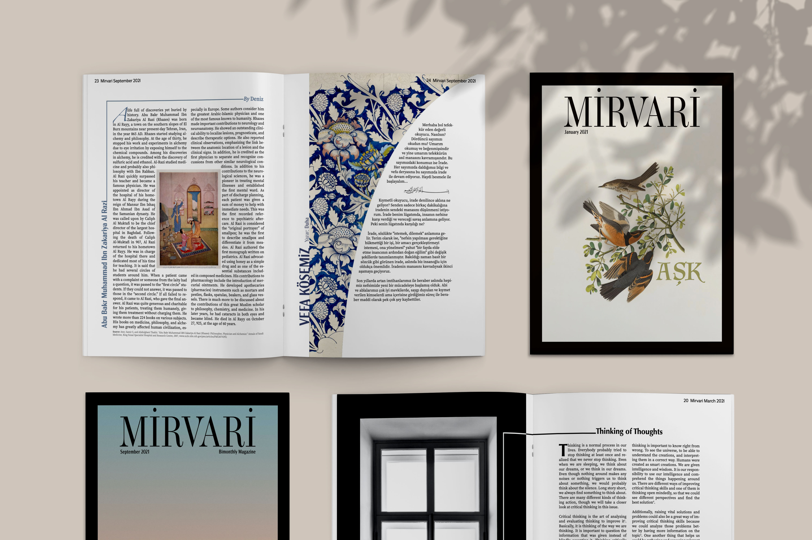

Mirvari Magazine is a bilingual bimonthly magazine for middle and high school students. This project started with nine high school and four college students coming together voluntarily and planting seeds to have a magazine for the youth in our Turkish community. In this magazine, the youths can find something that resonates with them from various content. Content includes anecdotes, book recommendations, poetry, and articles about health, sports, personal development, college preparation, and important historical figures in Turkish and Islamic culture.
Mirvari means “pearl” in Old Turkish and Azerbaijani. It is also the name of coffee that has passed from the Ottoman Empire to the present. Hoping that our pearl-worthy magazine would prevent us from waking up from daydreaming like a coffee, we thought that the word “Mirvari,” which is both a coffee name and a pearl, would be a suitable name for the magazine.
This project was an opportunity for the students behind the creation of this publication to learn how to collaborate and work with a team of authors, editors, and designers and develop a publication on schedule while having a constant framework and keeping the continuity of the content suitable for the audience. Even though it was a challenging experience, the team published five magazines successfully. The Digital version is published on the Issuu website free of charge to make it accessible to other Turkish youth communities worldwide, while the printed ones were subscription only. The magazine had 63 subscribers and reached over 120 people in the Turkish community.
